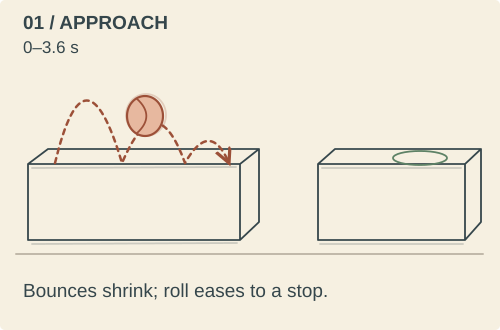
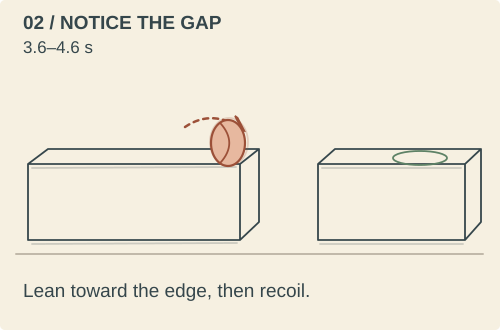
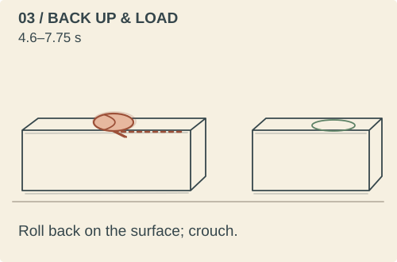
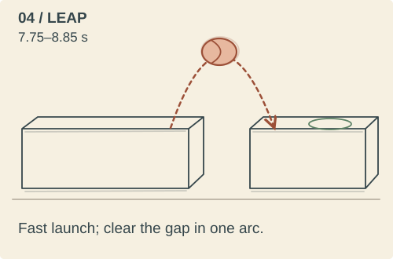
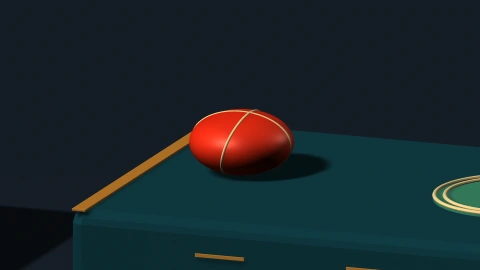
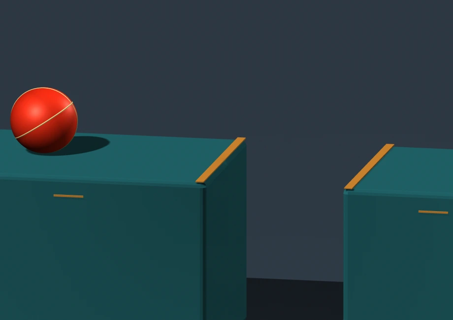
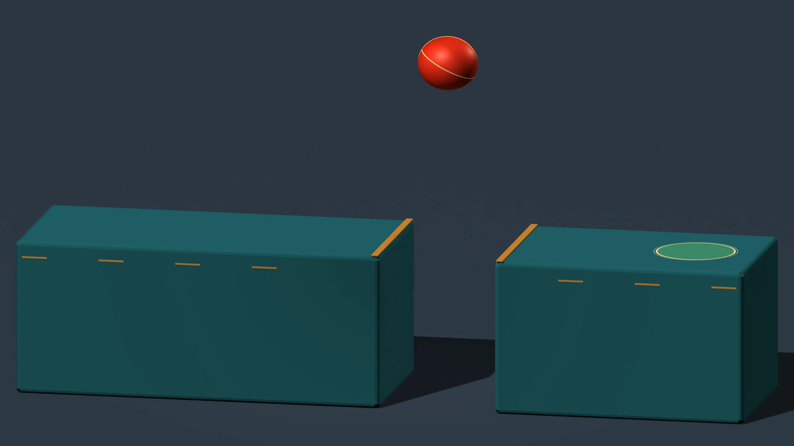
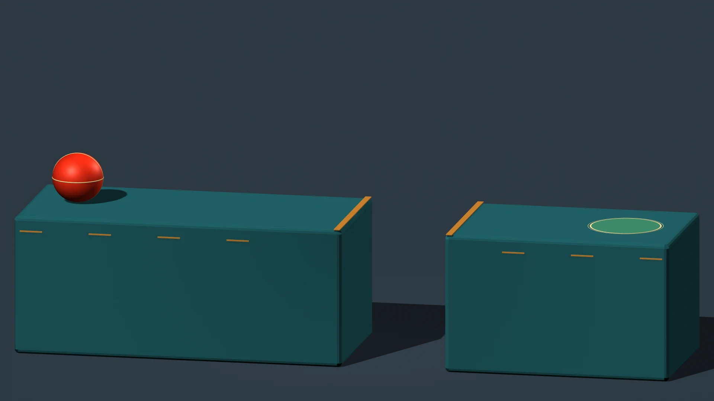
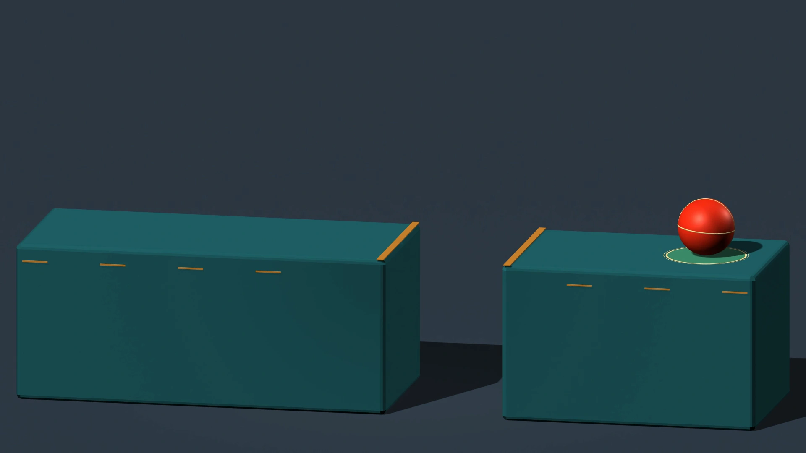

Mind the gap.
A bouncing ball reaches a break in its path. It pauses, backs up, and commits to a longer jump. A heavy landing gives way to smaller bounces until it comes to rest on the green target.
Storyboard & story






Open the complete storyboard sheet

The first bounces establish the ball’s weight. The hold at the edge changes the rhythm, making the gap a problem to solve. Backing up gives the large jump a clear preparation; the decreasing rebounds bring the sequence to a quiet finish.
Animation principles


Squash and stretch
The ball compresses on impact and lengthens during flight. Its sideways scale compensates for the vertical change so its volume stays constant.

Anticipation
After noticing the gap, the ball backs away and compresses before its run-up. The pause and windup prepare the audience for the larger jump.

Arcs and timing
The long jump follows a parabola. Vertical spacing decreases toward the apex, then increases on descent. Successive rebounds lose height and duration.Frames from the film


Motion & materials
Translation, rotation, and deformation are keyframed; no Maya dynamics are used. Flights use constant downward acceleration, with short contact intervals for squash and recovery. The deliberate retreat and jump are character actions; airborne motion and the diminishing rebounds supply the sense of weight.
Coral rubber, cream seams, slate platforms, brass edge strips, and a green landing target distinguish the moving ball from its surroundings. A fixed camera and contrasting colors keep the action readable.